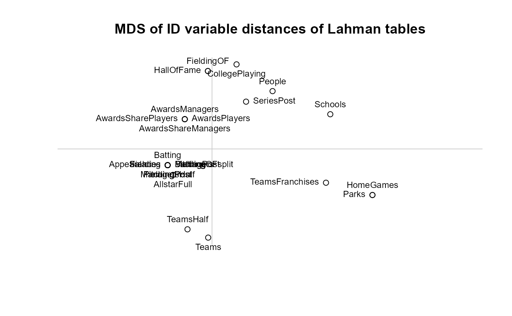

Lahman Datasets
LahmanData.RdThis dataset gives a concise description of the data files in the Lahman package. It may be useful for computing on the various files.
Usage
data(LahmanData)Format
A data frame with 24 observations on the following 5 variables.
filename of dataset
classclass of dataset
nobsnumber of observations
nvarnumber of variables
titledataset title
Details
This dataset is generated using vcdExtra::datasets(package="Lahman")
with some post-processing.
Examples
data(LahmanData)
# find ID variables in the datasets
IDvars <- lapply(LahmanData[,"file"], function(x) grep('.*ID$', colnames(get(x)), value=TRUE))
names(IDvars) <- LahmanData[,"file"]
str(IDvars)
#> List of 27
#> $ AllstarFull : chr [1:5] "playerID" "yearID" "gameID" "teamID" ...
#> $ Appearances : chr [1:4] "yearID" "teamID" "lgID" "playerID"
#> $ AwardsManagers : chr [1:4] "playerID" "awardID" "yearID" "lgID"
#> $ AwardsPlayers : chr [1:4] "playerID" "awardID" "yearID" "lgID"
#> $ AwardsShareManagers: chr [1:4] "awardID" "yearID" "lgID" "playerID"
#> $ AwardsSharePlayers : chr [1:4] "awardID" "yearID" "lgID" "playerID"
#> $ Batting : chr [1:4] "playerID" "yearID" "teamID" "lgID"
#> $ BattingPost : chr [1:4] "yearID" "playerID" "teamID" "lgID"
#> $ CollegePlaying : chr [1:3] "playerID" "schoolID" "yearID"
#> $ Fielding : chr [1:4] "playerID" "yearID" "teamID" "lgID"
#> $ FieldingOF : chr [1:2] "playerID" "yearID"
#> $ FieldingOFsplit : chr [1:4] "playerID" "yearID" "teamID" "lgID"
#> $ FieldingPost : chr [1:4] "playerID" "yearID" "teamID" "lgID"
#> $ HallOfFame : chr [1:2] "playerID" "yearID"
#> $ HomeGames : chr(0)
#> $ Managers : chr [1:4] "playerID" "yearID" "teamID" "lgID"
#> $ ManagersHalf : chr [1:4] "playerID" "yearID" "teamID" "lgID"
#> $ Parks : chr(0)
#> $ People : chr [1:3] "playerID" "bbrefID" "retroID"
#> $ Pitching : chr [1:4] "playerID" "yearID" "teamID" "lgID"
#> $ PitchingPost : chr [1:4] "playerID" "yearID" "teamID" "lgID"
#> $ Salaries : chr [1:4] "yearID" "teamID" "lgID" "playerID"
#> $ Schools : chr "schoolID"
#> $ SeriesPost : chr "yearID"
#> $ Teams : chr [1:5] "yearID" "lgID" "teamID" "franchID" ...
#> $ TeamsFranchises : chr "franchID"
#> $ TeamsHalf : chr [1:4] "yearID" "lgID" "teamID" "divID"
# vector of unique ID variables
unique(unlist(IDvars))
#> [1] "playerID" "yearID" "gameID" "teamID" "lgID" "awardID"
#> [7] "schoolID" "bbrefID" "retroID" "franchID" "divID"
# which datasets have playerID?
names(which(sapply(IDvars, function(x) "playerID" %in% x)))
#> [1] "AllstarFull" "Appearances" "AwardsManagers"
#> [4] "AwardsPlayers" "AwardsShareManagers" "AwardsSharePlayers"
#> [7] "Batting" "BattingPost" "CollegePlaying"
#> [10] "Fielding" "FieldingOF" "FieldingOFsplit"
#> [13] "FieldingPost" "HallOfFame" "Managers"
#> [16] "ManagersHalf" "People" "Pitching"
#> [19] "PitchingPost" "Salaries"
################################################
# Visualize relations among datasets via an MDS
################################################
# jaccard distance between two sets; assure positivity
jaccard <- function(A, B) {
max(1 - length(intersect(A,B)) / length(union(A,B)), .00001)
}
distmat <- function(vars, FUN=jaccard) {
nv <- length(vars)
d <- matrix(0, nv, nv, dimnames=list(names(vars), names(vars)))
for(i in 1:nv) {
for (j in 1:nv) {
if (i != j) d[i,j] <- FUN(vars[[i]], vars[[j]])
}
}
d[is.nan(d)] = 0
d
}
# do an MDS on distances
distID <- distmat(IDvars)
config <- cmdscale(distID)
pos=rep(1:4, length=nrow(config))
plot(config[,1], config[,2], xlab = "", ylab = "", asp = 1, axes=FALSE,
main="MDS of ID variable distances of Lahman tables")
abline(h=0, v=0, col="gray80")
text(config[,1], config[,2], rownames(config), cex = 0.75, pos=pos, xpd=NA)
